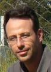

Sobre o evento
III Workshop - Desenvolvimento de ferramentas para o suporte à tomada de decisão no manejo de afídeos-BYDV em trigo
Um evento vinculado ao projeto Desenvolvimento e validação de ferramentas para monitoramento e tomada decisão de manejo de epidemias causadas por vírus transmitidos por insetos - CNPQ: 20.22.00.042.00.00.
Objetivo
Atualizar os membros da Plataforma em identificação de afídeos e parasitoides; padrões populacionais de afídeos, parasitoides e suas interações; estimativas de dano e eficiência de estratégias de manejo; uso da plataforma TrapSystem, do modelo de simulação ABISM e dos softwares para contagem de afídeos em plantas AgroExperiment, identificação e detecção de insetos em imagens digitais: AphidCV e InsectCV.
Resultados esperados
Equipe capacitada a identificar afídeos e parasitoides e apta a utilizar as ferramentas de tecnologia de informação para construção e desenvolvimento de uma base segura com informações históricas sobre populações de afídeos e parasitoides, suas interações, seus impactos e seu manejo.
Programação
Agenda do evento
Quinta (01/06/2023)
Manhã
08:15 às 08:30
Abertura e apresentação do projeto CNPQ
UPF - Campus I
Auditório da Pós-graduação em Agronomia - G3
Responsável: Dr. Douglas Lau
08:30 às 10:00
Principais espécies de afídeos que atacam cereais de inverno - teoria e prática
Responsável: Dr. Paulo Roberto do Valle da Silva Pereira e Dra. Vânia
Bianchin
10:00 às 10:15
Intervalo
10:15 às 12:00
Identificação de parasitóides de afídeos pragas em cereais de inverno: caracteres morfológicos e identificação das principais espécies de parasitóides que atacam os afídeos dos cereais - teoria e prática
Responsável: Dr. Marcus Vinícius Sampaio e Ms. Carlos Diego Ribeiro dos
Santos
Tarde
14:00 às 15:00
Mapeamento de populações de afídeos em microparcelas e organização de dados para o Agroexperiment
Embrapa Trigo
Laboratório de Entomologia
Responsável: Ms.Talison Roberto Maurer
15:00 às 15:45
Processamento de amostras para contagem de afídeos em plantas e digitalização para o Trap System
Responsável: Dra. Vânia Bianchin
15:45 às 16:00
Intervalo
16:00 às 16:30
Processamento de amostras para contagem de afídeos em plantas e digitalização para o Trap System
Responsável: Dra.Vânia Bianchin
16:30 às 17:30
Visita às criações de afídeos
Responsável: Ms. Paulo Ernani Peres Ferreira
Sexta (02/06/2023)
Manhã
08:30 às 09:30
Apresentação
IFSul - Campus Passo Fundo
Locais: Salas 505, 510, 511, 513 e Youtube
Responsável: Dr. Douglas Lau e Ms. Telmo Júnior
09:30 às 10:15
Cenário atual de perspectivas para a plataforma Trap System
Responsável: Dr. Alexandre Lazzaretti
10:15 às 10:30
Intervalo
10:30 às 11:30
InsectCV: software para identificação e contagem de afídeos alados e parasitoides em imagens digitais
Responsável: Prof. Ms. Telmo Júnior
11:30 às 13:30
Intervalo para o Almoço
Tarde
13:30 às 14:30
AgroExperiment: ferramenta web para coordenação de experimentos sobre dinâmica populacional de insetor
IFSul - Campus Passo Fundo
Locais: Salas 505, 510, 511 e Youtube
Responsável: Prof. Ms. Jorge Bavaresco
14:30 às 15:30
AphidCV: software para contagem, classificação e mensuração de afídeos
Responsável: Prof. Dr. Rafael Rieder
15:30 às 16:00
Intervalo
16:00 às 17:00
ABISM: modelo de simulação para auxliar no suporte à tomada de decisão para o manejo de afídeos
Responsável: Prof. Dr. Roberto Wiest
17:00 às 18:00
Análise de dados populacionais
Responsável: Ms. Eduardo Engel
Organização
Responsáveis

Douglas Lau
douglas.lau@embrapa.br